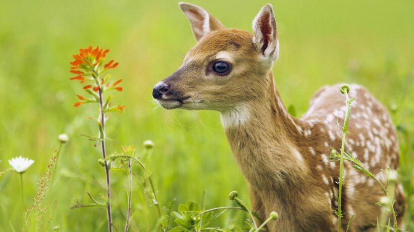

Nai có vóc dáng cao lớn, to khoẻ, thân dài khoảng 1,8 tới 2 mét, vai cao 1,4 đến 1,6 mét và nặng khoảng 2 tạ khi trưởng thành. Đặc điểm nổi bật nhất của chúng là trên cổ có một đường sọc màu nâu sẫm chạy dọc sống lưng đến tận đuôi. Bộ móng rất cứng, có thể leo lên những đồi núi đầy đá sỏi, 4 chân thon dài và chắc khỏe, có thể đi lại dễ dàng trên những vách dốc dựng đứng, xứng danh là "kiện tướng leo núi". Nai có khuôn mặt khá dài, đôi tai to mọc dựng đứng trên đỉnh đầu, mắt rất to, trông rất hiền lành. Ngoài ra, tuyến dưới ổ mắt của chúng rất phát triển, khi chúng nổi giận hay hoảng sợ, tuyến dưới ổ mắt lập tức phình ra to bằng con mắt. Nai đực và nai cái có màu khác nhau, con đực trên lưng thường có màu nâu đen hoặc nâu sẫm, dưới bụng màu trắng vàng, còn lông con cái nhạt hơn, có màu đỏ. Nai đực có cặp sừng dài, mỗi sừng ba nhánh. Sừng mọc ra từ mé sau đầu, chếch ra ngoài, tạo thành hình chữ u, đoạn trên nhẵn bóng, phần dưới hơi xù xì, đoạn cuối có một vòng sừng trông giống như cối xay. Sừng của nai rất dài,thường dài từ 70–80 cm, dài nhất có thể tới 125 cm. Loài nai ăn lá non, chồi cây mềm, cỏ non, cây bụi, quả rụng. Nai mọc sừng lúc hai tuổi, 20 tháng tuổi thành thục. Nai sống đơn độc, chỉ ghép đôi vào mùa sinh sản là xuân và thu.
